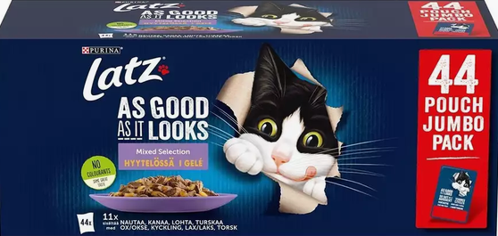

Paras Ruoka
Tiikerin gastronomiset suosikit:
Minun suurinta herkkuani on ehdottomasti täyteläinen, kalanmakuinen papuruoka! Olen kuitenkin luonteeltani melko joustava syöppö: minulle maistuvat lähes kaikki ruoat, märkäruoat ja erilaiset kissaherkut, joita minulle tarjotaan.
Jos minulta kysytään, mikään ei voita tuoretta jauhelihaa – se on heikkouteni, jota voisin syödä kuinka paljon tahansa!
Mistin tarkkaan valittu menu:
Minulla on hieman hienostuneempi ja valikoivampi maku kuin Tiikerillä. Minun lautaseltani pitää löytyä aina laadukasta märkäruokaa sekä maistuvaa papuruokaa.
Toisin kuin monet muut kissat, minä en voi sietää jauhelihaa! Sillä ei ole väliä, onko jauheliha keitettyä vai kevyesti paistettua – jätän sen aina koskematta.
Minun herkkupäiväni koostuvat laadukkaista kastikeruoista ja raikkaasta vedestä.
Tälläinen ruoka kissa tykkää eniten

Tästä löytyy kissan ruoan verkkosivua
Kiassan ruoan verkkosivu